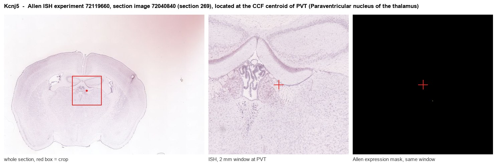

Kcnj5
G protein-activated inward rectifier potassium channel 4 (GIRK-4) (Cardiac inward rectifier) (CIR) (Heart KATP channel) (Inward rectifier K(+) channel Kir3.4) (KATP-1) (Potassium channel, inwardly rec
Spatial tier: RESTRICTED · Class: ION_CHANNEL · Top region: PVT (Paraventricular nucleus of the thalamus) · Positive regions: 14/554
Function in PVT: evidence, prediction, innovation
- Gene function
- Kcnj5 encodes GIRK4 (Kir3.4), a subunit of G protein-gated inwardly rectifying potassium channels. GIRK subunits assemble as tetramers opened directly by Gbeta-gamma released from Gi/Go-coupled receptors such as GABA-B, mu-opioid, D2 and alpha2, producing slow hyperpolarising inhibitory postsynaptic currents. Gain-of-function KCNJ5 mutations cause human primary aldosteronism.
- Region function
- The paraventricular nucleus of the thalamus (PVT) is a midline thalamic hub that integrates arousal, stress and homeostatic signals and routes salience and threat information to nucleus accumbens, prefrontal cortex and amygdala.
- Published in this region
- expression only Expression is directly documented but function is not. Wickman et al. 2000 used GIRK4-null mice as a negative background to map Kcnj5 mRNA and found it in only a handful of brain regions, explicitly including the parafascicular and paraventricular thalamic nuclei (plus deep cortical pyramidal neurons, claustrum/endopiriform, globus pallidus, VMH and some brainstem nuclei); the same study found GIRK4-null mice grossly normal in locomotion, vision, nociception and passive avoidance. Karschin et al. 1996 similarly showed GIRK1-4 are differentially distributed across the adult rodent brain. No study has tested GIRK4 function in PVT.
- Predicted function
- Prediction: GIRK4 co-assembles with GIRK1/GIRK2 in PVT neurons to provide the postsynaptic effector for GABA-B, mu-opioid and other Gi signalling, setting how strongly PVT cells can be silenced during satiety, sedation and opioid exposure. Conditional Kcnj5 deletion or intra-PVT tertiapin-Q should reduce baclofen- and opioid-evoked outward currents, leaving PVT neurons hyperexcitable and predicting exaggerated arousal, stress reactivity and cue-driven salience responses; the mild whole-body knockout phenotype suggests the deficit appears only under challenge.
- Innovation
- ★★★★★ 5/5 GIRK4 is one of the few genes with confirmed PVT expression yet no functional study there, while PVT has become a major salience and arousal target.
- Tools
- Kcnj5/GIRK4 knockout mice (Wickman et al. 2000) and Kcnj5 floxed alleles; GIRK blocker tertiapin-Q; GIRK activator ML297 and related VU compounds; anti-GIRK4 antibodies; baclofen and DAMGO as physiological probes. No validated Kcnj5-Cre driver - PVT is instead accessed with Drd2-Cre, Gal-Cre or retro-AAV from nucleus accumbens.
- References
Direct evidence located at the region

Allen ISH experiment 72119660, section image 72040840 (section 269): the section that contains the CCF centroid of Paraventricular nucleus of the thalamus according to the Allen image-to-atlas alignment (reference_to_image), with a 2 mm window around that point. Left: whole section, red box = window. Middle: ISH signal. Right: Allen's expression-mask view of the same window. open this image in the Allen viewer
Direct spatial evidence

Regional expression figure

Predicted WMB × fine-CCF profile; not direct full-transcriptome spatial measurement.
Spatial profile
Evidence and specificity
- Evidence status
- PREDICTED_FINE
- Direct sources
- None; predicted localization only
- Exclusive threshold
- 12 positive regions out of 554
- Spatial specificity
- 0.314
- Top-region fraction
- 0.078
- Filter status
- PASS
Interpretation limits
- Cell-type-to-region projection is imputed expression, not direct spatial measurement.
- Adult reference atlases do not establish stability across age, sex, strain, state, or disease.
- Transcript abundance does not guarantee protein abundance or genetic-tool performance.